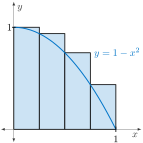
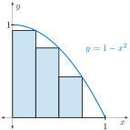
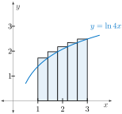
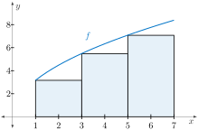

Handout Daily Prep 4.2 - Riemann Sums
Section Overview
We have begun to see several reasons why we are interested in the area that lies between a given curve \(y=f(x)\) and the \(x\)-axis. The notion of a Riemann sum provides a formal symbolic way to consider approximations to this area. The notation that corresponds with Riemann sums is complicated: indeed, we will often consider expressions such as \(\displaystyle L_{n}=\sum_{i=0}^{n-1}f(x_{i})\cdot \Delta x\text{,}\) and it is essential that you work to make sense of this notation and what it represents. As we progress from estimating certain areas to finding those areas exactly, we will soon start to use limits along with Riemann sums. There, too, it is essential that you recognize what a Riemann sum represents. At the core of all of this, don’t miss the fundamentally simple idea at the foundation: \(f(x_{i})\cdot \Delta x\) represents the area of a certain rectangle.
Section Basic learning objectives
These are the tasks you should be able to perform with reasonable fluency when you arrive at our next class meeting. Important new vocabulary words are indicated in italics.
-
Use basic notation for a Riemann sum. That is, when we write \(\sum_{i=1}^{n}f(x_{i}) \Delta x\text{,}\) to know what this represents geometrically and what this quantity aspires to measure.
-
Compare and contrast left, right, and middle Riemann sums (\(L_{n}, R_{n}, M_{n}\)).
Section To prepare for class
Complete all actions listed below. Respond to the questions highlighted with Submit.
-
Read motivating questions and the introduction to section 4.2 (up until Preview Activity 4.2.1).
-
Watch video Quick Review - Riemann Sums (3:28).
-
Read section 4.2.2 up to Activity 4.2.2.
-
Watch video Sigma Notation (7:14).
-
Prompt Copilot “How is sigma notation related to for loops that are written in computer code?” Follow up the response with prompting “Is there a more appropriate analogy for sigma notation than for loops that I mentioned above?”
-
Do these problems.
-
[Submit]
-
Express \(\displaystyle 3(4)^{2} + 3(5)^{2} + 3(6)^{2} + 3(7)^{2}\) using sigma notation.
-
If \(f(x) = -\sqrt{x}\text{,}\) and \(\Delta x=0.1\text{,}\) compute the value of \(\displaystyle \sum_{j=3}^{5} f(j^{2}) \cdot \Delta x\text{.}\)
-
\(\displaystyle p(x) = \sum_{k=1}^{4} (k^{2}x^{k})\) is a polynomial. How is \(p(x)\) more commonly written? What is the degree of \(p\text{?}\)
-
-
[Submit] In this problem, we seek to estimate the area under the curve \(y=1-x^{2}\text{,}\) above the \(x\)-axis, and between \(x=0\) and \(x=1\text{.}\)
-
Determine an upper estimate for the area using the four rectangles found in Figure 89 (a left sum \(L_{4}\)).
Figure 89. A left Riemann sum with \(n=4\) rectangles. -
Determine a lower estimate for the area using the four rectangles in Figure 90. Notice the last rectangle has zero height! This is a right sum, \(R_{4}\text{.}\)
Figure 90. A right Riemann sum with \(n=4\) rectangles. -
If \(f(x) = 1-x^{2}\text{,}\) which of these gives an upper estimate for the area under the curve \(y=f(x)\text{,}\) above the \(x\)-axis, between \(x=0\) and \(x=1\text{?}\) which gives a lower estimate? what does the third quantity represent? Sketch it on the graph in Figure 91.
-
\(\displaystyle \displaystyle \frac{1}{4}f(0) + \frac{1}{4}f\left(\frac{1}{4}\right) + \frac{1}{4}f\left(\frac{2}{4}\right) + \frac{1}{4}f\left(\frac{3}{4}\right) = \sum_{k=1}^{4}f\left(\frac{k-1}{4}\right) \cdot \frac{1}{4}\)
-
\(\displaystyle \displaystyle \frac{1}{4}f\left(\frac{1}{8}\right) + \frac{1}{4}f\left(\frac{3}{8}\right) + \frac{1}{4}f\left(\frac{5}{8}\right) + \frac{1}{4}f\left(\frac{7}{8}\right) = \sum_{k=1}^{4}f\left(\frac{(k-1)+k}{8}\right) \cdot \frac{1}{4}\)
-
\(\displaystyle \displaystyle \frac{1}{4}f\left(\frac{1}{4}\right) + \frac{1}{4}f\left(\frac{2}{4}\right) + \frac{1}{4}f\left(\frac{3}{4}\right) + \frac{1}{4}f\left(\frac{4}{4}\right) = \sum_{k=1}^{4}f\left(\frac{k}{4}\right) \cdot \frac{1}{4}\)

Figure 91. The graph of \(y=1-x^2\text{.}\) -
-
Many applets and packaged software can compute areas of these approximating rectangles quickly. Use the applet The Riemann Sum to compute the value of a left, right, and middle sum using \(n=4\) rectangles. [The middle sum is shown in Figure 92.]
![Interactive diagram illustrating Riemann sum approximations for the function f(x) = 1 − x² on the interval from 0 to 1. The curve of the function is shown as a downward-opening parabola. Four subintervals are used, and shaded rectangular bars represent sample rectangles for the selected sample point method. Vertical dashed lines show subinterval boundaries. A sidebar on the left displays options for selecting sample point placement, including relative point, midpoint, random, upper sum, and lower sum. The sidebar also lists numerical approximation values: relative sample approximation 0.67188, random approximation 0.72847, upper sum 0.78125, lower sum 0.53125, and the exact integral value 0.66667. The diagram visually compares the rectangles to the parabola to demonstrate over- and underestimates in the Riemann sum.](external/RiemannSumAppletOutput1.jpg)
Figure 92. A middle sum used to compute the area under \(f(x)=1-x^2\) and above \([0,1]\) using \(n=4\) rectangles. -
Compute each of these sums using \(n=50\) rectangles. Form a conjecture about the exact area based on this output.
-
-
-
Prompt Copilot “Please produce and execute Python code that illustrates a Riemann sum of the function f(x)=x\(\wedge\)2+1 from x=1 to x=3 using n=5 rectangles.” Does the AI produce a left or a right Riemann sum? Does the AI give you a correct value for the sum being illustrated?
-
Read section 4.2.3 on Riemann Sums.
-
[Submit] Read section 4.2.3 again. In this paragraph regarding midpoint Riemann sums, the authors define\begin{equation*} \overline{x}_{i+1}= \frac{x_{i} + x_{i+1}}{2}. \end{equation*}A diagram illustrating the resulting Riemann sum is shown on the right in this figure. Draw a similar diagram for the Riemann sum resulting from\begin{equation*} \widehat{x}_{i+1}= \frac{x_{i}}{3}+ \frac{2x_{i+1}}{3}. \end{equation*}Hint: You may wish to try a simple example in which \(x_{0}=0, x_{1}=3, x_{2}=6, x_{3}=9\text{,}\) and \(x_{4}=12\text{.}\)
-
Watch video Computing a Left-Hand Riemann Sum (8:54).
-
Explore the applet The Riemann Sum by replicating the value of \(L_{3}\) found in the previous video (18.8787).
-
Watch video Another Riemann Sum Example (10:33).
Section After class
Solidifying the concepts discussed in class through practice is necessary to build your skills.
-
Read section 4.2.4.
-
Watch video Calculating Right and Midpoint Riemann Sums (9:32).
-
Read section 4.2.5 - summary.
Section Advanced learning objectives
In addition to mastering the basic objectives, here are the tasks you should be able to perform after class, with practice:
-
Compute by hand, for small values of \(n\text{,}\) \(L_{n}, R_{n}\text{,}\) or \(M_{n}\text{,}\) and draw an accurate corresponding picture.
-
Explain how Riemann sums detect net-signed area between a given function and the \(x\)-axis on an interval of choice.
Section Additional suggestions
-
Watch video Summation Notation (4:26).
-
Do these problems.
-
Consider \(f(x) = \ln 4x\) on \([1,3]\) as shown in Figure 93. We calculate left and right Riemann sums for \(n=5\text{.}\)
Figure 93. The graph of \(\ln 4x\) on \([1,3]\text{.}\) -
Calculate \(\Delta x\text{,}\) the width of each subinterval.
-
Does the diagram illustrate a left or a right Riemann sum?
-
Calculate the value of the left and right Riemann sum with a calculator. Verify your result using both this Riemann Sum applet and a spreadsheet such as Excel.
-
Based on your answer above, give approximate lower and upper bounds on the area under \(y=\ln 4x\text{,}\) above the \(x\)-axis, and between \(x=1\) and \(x=3\text{.}\)
-
-

Figure 94. A Riemann sum for \(f\) on \([1,7]\text{.}\) -
Identify the number of subintervals \(n\text{.}\)
-
What is the length \(\Delta x\) of each subinterval?
-
Using sigma notation, \(\displaystyle \sum\text{,}\) write an algebraic representation of this Riemann sum.
-
-
Section Answers
Subsection To prepare for class
-
-
\(\displaystyle \displaystyle 3(4)^{2} + 3(5)^{2} + 3(6)^{2} + 3(7)^{2} = \sum_{i=4}^{7} 3i^{2}\)
-
\(\displaystyle \displaystyle \sum_{j=3}^{5} f(j^{2}) \cdot \Delta x = f(3)\cdot 0.1 + f(4) \cdot 0.1 + f(5) \cdot 0.1 = (-3-4-5)\cdot 0.1 = -1.2\)
-
\(p(x) = 1x + 4x^{2} + 9x^{3} + 16x^{4}\) is a more common description. This is a polynomial of degree 4.
-
-
-
\(\displaystyle \displaystyle \frac{1}{4}\left( 1+\frac{15}{16}+\frac{3}{4}+\frac{7}{16}\right) = 0.78125\)
-
\(\displaystyle \displaystyle \frac{1}{4}\left(\frac{15}{16}+\frac{3}{4}+\frac{7}{16}+0\right) = 0.53125\)
-
The first sum represents a left sum (an overestimate).The second sum represents a right sum (an underestimate).The last sum represents a middle sum.
-
The middle sum is illustrated in Figure 95. Note that to move the endpoints, just drag the blue dots to 0 and 1 accordingly. Also, to stretch the axes, the SHIFT key can be held as you drag either the \(x\)- or \(y\)-axis.
![Interactive diagram illustrating Riemann sum approximations for the function f(x) = 1 − x². The curve is a downward‑opening parabola shown over the interval from x = 0 to approximately 1.2. Four midpoint rectangles are drawn under the curve, each shaded in light orange, with heights determined by the function value at each subinterval’s midpoint. Vertical dashed lines mark the subinterval boundaries. On the left side of the image, a control panel displays options for sample point placement, the number of subintervals (n = 4), and numerical approximation values: relative 0.67188, random 0.64026, upper 0.78125, lower 0.53125, and the exact integral 0.66667.](external/RiemannSumAppletOutput2.jpg)
Figure 95. -
A reasonable conjecture would be that the exact area is 2/3.
-
Subsection Additional suggestions
-
-
\(\displaystyle \displaystyle \Delta x = \frac{3-1}{5}= 0.4\)
-
This is a right Riemann sum.
-
-
-
\(\displaystyle n=3\)
-
\(\displaystyle \Delta x = 2\)
-
This is a left Riemann sum.
-
\(\displaystyle \sum_{k=0}^{2} f(1+2k) \cdot 2\text{.}\) Alternatively, \(\displaystyle \sum_{k=1}^{3} f(-1+2k) \cdot 2\text{.}\)
-